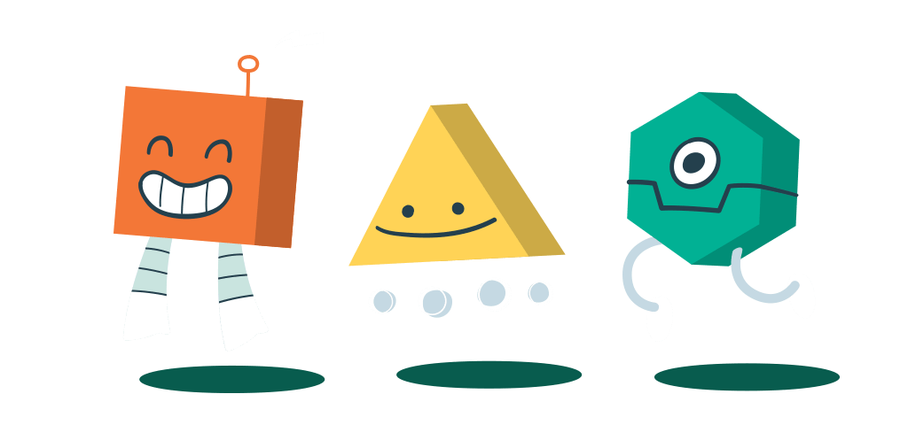
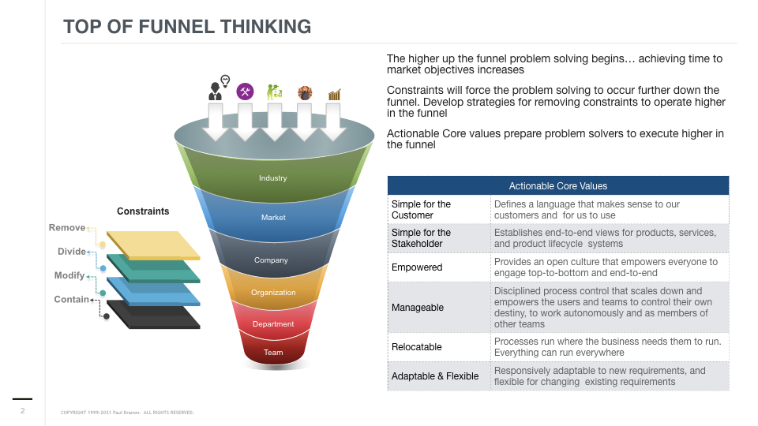
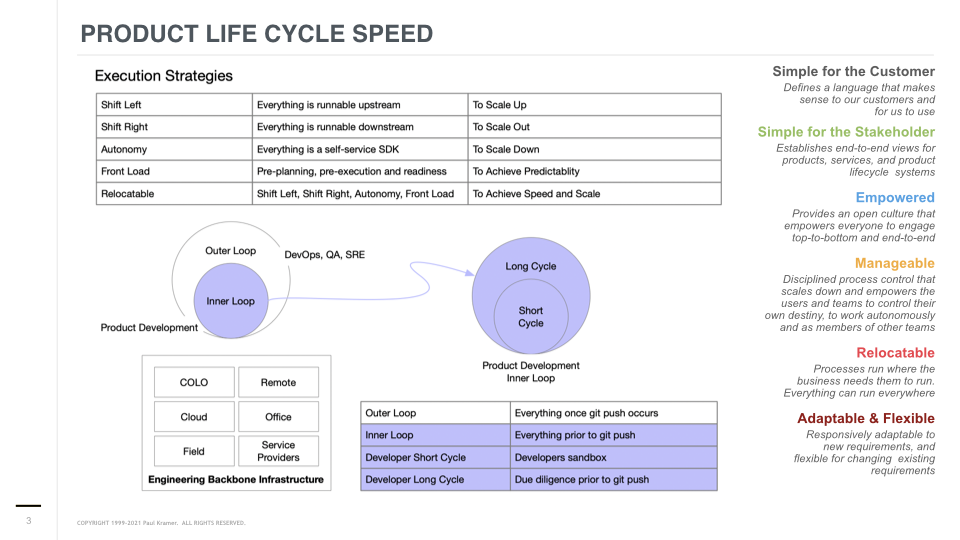
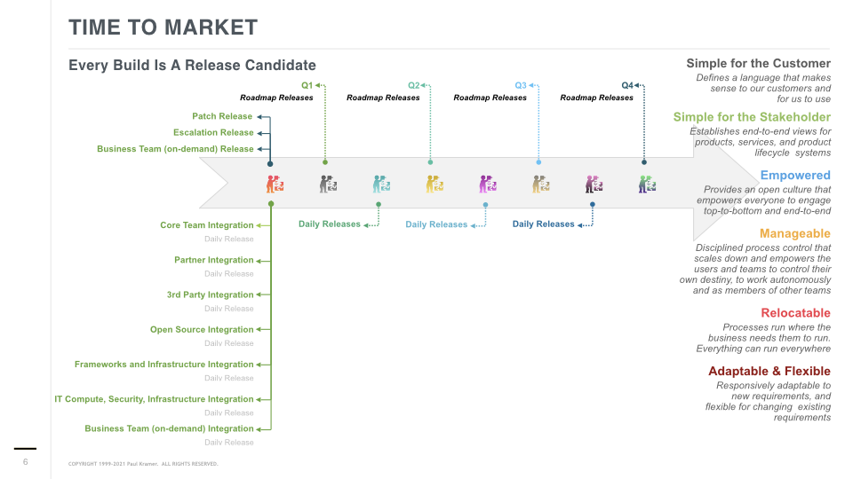

The grass isn't always greener on the other side... But the sky may be bluer! Actionable Core Values Lead The Way!

Establish Top of Funnel and Right-To-Left Thinking To Hit Schedules and Achieve Time to Market Objectives

Define strategies for speed around the Inner Loop

To build a great DevOps back end, requires building a great Developer front end
